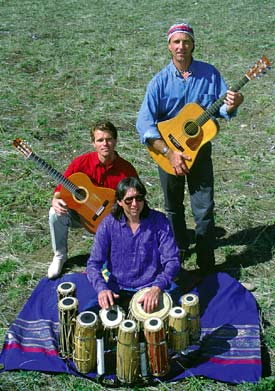

Chuck Wilson
Chuck Wilson is a musician of exceptional diversity. From his roots in jazz and blues, to rock, ethnic and world beat music; Chucks uplifting eclectic style treats the listener to a virtuosity and sound uniquely his own. As one of the leading proponents of the therapeutic properties of sound, Chuck Wilson is a popular lecturer and workshop leader. Through his years of study within music, consciousness and psycho-acoustics, he founded Discovery Sound, a company that developed, and currently markets, technologies that promote states of deep relaxation and stress reduction. Chuck is presently working on a new series of CD's to assist in connecting with our inner self.
Contact wilsonsound@hotmail.com
Karl ........... Chuck
Anton
more MP3 Downloads: from Desert Bloom
Ocean Wave by Chuck Wilson: Chuck Wilson: electric and lap steel guitars, Anton Mizerak: keyboards & harmonica; Karl Joseph: nylon stringed guitar.
Waiting for Rain by Karl Joseph: Karl Joseph: guitar; Sherril Kannasto flute; Anton Mizerak: keyboards.
Karl Joseph
Karl Joseph is a composer/guitarist with a broad musical background. He began studying classical music as a woodwind, brass, and percussion player as a child. He swtiched to the guitar at 15 and found that was his instrument of choice. Karl has played in classical, rock, latin, and jazz styles. He especially enjoys combining classical, latin, and contempoary guitar syles into his compositions, which have an uplifting, reflective quality. He has written numerous works for other instruments as well.